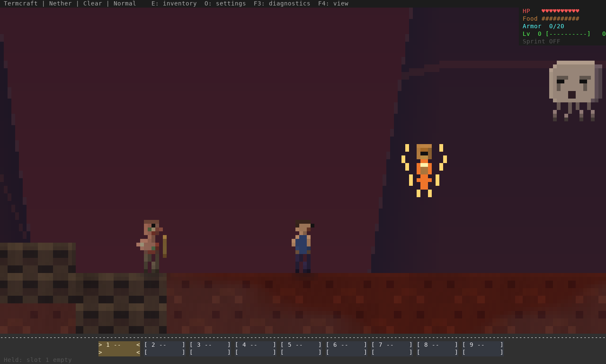
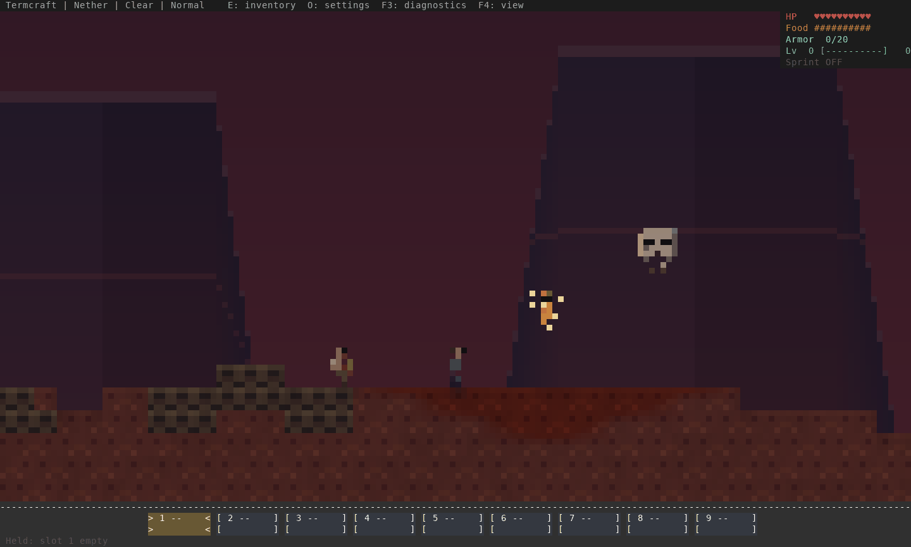
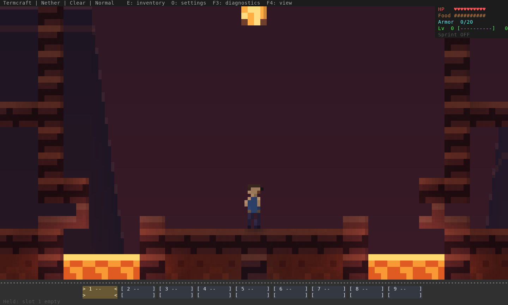

A clearer, richer Nether
Warm fortress masonry, quieter rock texture, readable figures and local blaze glow. Ghasts have shaded faces and moving tentacles; blazes have a visible core and animated rods. Background rock stays fixed to the world as the camera moves.
Current art · detailed view
Generated cavern, staged creature positions. This is the detailed F4 view. Normal overview · Smaller terminal. Click any image for full size.
Before and after · matching scene and scale
Creature motion and attack presentation
Fixed camera · normal overview · idle to attack-ready
72 renderer samples at 60 Hz. Creature ages and attack-ready states are staged for this art review; this is not a live combat recording or an achieved frame-rate measurement.
Fortress detail
